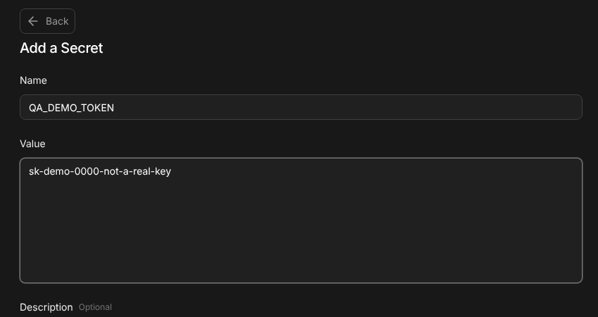
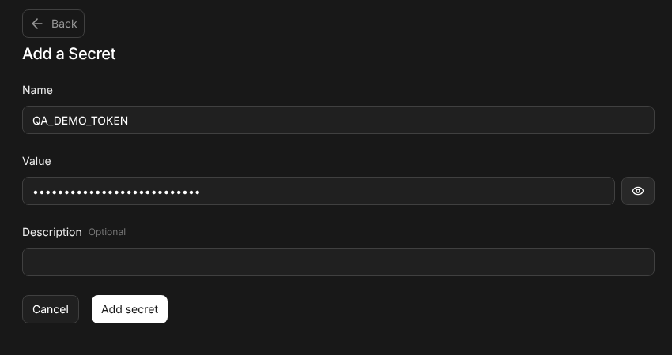
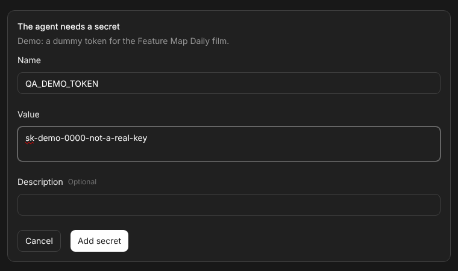
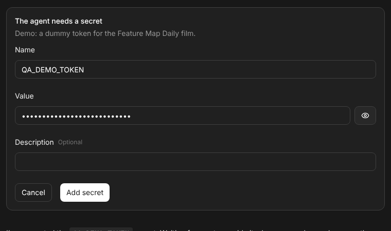

Every day an agent checks the OpenHands Agent Canvas against its feature map: everything that changed since yesterday, driven in a real browser, with evidence. This page follows one daily pass, the one of 24 October 2026, and one change it verified from end to end: PR #18870, which stopped secret values from showing in plain text.
The verify-openhands feature map lists every behavior a user can see in the OpenHands app (Agent Canvas): 28 families, 798 behaviors after the 24 October pass. Each behavior has a stable ID such as F14.value-reveal and a recipe of control-openhands commands that an agent runs against a fresh local stack in a real browser.
F14 is one of the smaller families: Settings → Secrets, and the card the agent shows when it asks for a secret. After the 24 October pass it has 13 behaviors. One of them was written that day, because of #18870.
F14.value-reveal: the value field in the Add and Edit forms and in the request card is a masked password input. Its eye button (Show secret, then Hide secret) shows and hides only what was typed, never a stored value; it does not submit or save, and the field is masked again when the form reopens or another secret is edited.04f6dd5, closing #18869.map affected listed F14. The pass wrote the new row, drove it live at desktop and phone width, updated three older F14 sentences, and an independent agent re-ran it.| Issue | #18869, opened and closed 23 Oct 2026. Reported in Agent Canvas 1.32.0; the request card rendered the shared SecretForm, whose value control was an unmasked <textarea>. Triage added ten acceptance criteria, among them: masked native password input on the card and in Settings, a show/hide control that starts hidden and never reveals a stored value, unchanged save, cancel and retry paths, and the value never leaving the browser. |
| Pull request | #18870 "fix: mask secret values in request and Settings forms". HUMAN note: "I caught this while testing the software factory automation myself." No API or persistence change; Settings also became single-line. |
| Files | src/components/features/settings/secrets-settings/secret-form.tsx (+42 −25), src/components/features/conversation/secret-request-card.tsx (−1), src/i18n/translation.json (+36, the Show/Hide secret labels), three test files (+49 −3), and four .pr/ screenshots. |
| Merge | 04f6dd5fcc42; the commit before it on main is 4d1c4d1048b7. Both were launched for the recordings below. |
| Daily pass | #18904, BASE 6eb91bb → TARGET 084a410: "F14.value-reveal is a new row: masked value with a Show/Hide secret toggle (#18870). The Gotcha, 'Replace the value' and 'Agent requests a secret' wording are updated to match." Merged 24 Oct; the next pass started from its baseline. |
src/components/features/settings/secrets-settings/secret-form.tsx - <textarea name="secret-value" rows={valueRows} /> + <input name="secret-value" type="password" autoComplete="new-password" />
For this page, both commits were launched side by side as isolated stacks (control-openhands launch --new from a worktree at each commit; Agent Server 1.58.1, automation 1.25.1) and driven with the same commands. The value is a dummy, sk-demo-0000-not-a-real-key. browser eval reads the field from the DOM, so the result does not rest on a screenshot alone.

browser eval → TEXTAREA textarea. The value is readable.
browser eval → INPUT password new-password. Masked; the eye button shows it on request.request_secret)
TEXTAREA. This is the path in the original report.
INPUT password with the eye button. deepseek-flash made the same single request_secret call on both stacks.Every line is a real control-openhands verb. The outer loop is the daily pass; the inner block is the F14.value-reveal recipe, abridged.
# a daily delta pass (verify-openhands) BASE = map baseline # "Maintenance baseline: main@<sha>" in the map index TARGET = git rev-parse origin/main families = map affected --base BASE --target TARGET # → F01 F03 F05 F06 F07 F14 F25 F26 RUN = launch --new ; doctor # isolated stack: Agent Server, automation, UI, browser llm preset deepseek ; onboard --skip for row in rows(families) + rows_linking_closed_issues: # F14.value-reveal, abridged browser goto /settings/secrets browser click testid=add-secret-button browser eval "input.tagName, input.type, input.autocomplete" # INPUT password new-password browser fill 'testid=add-secret-form >> testid=value-input' qa-dummy-value-123 browser network --clear browser click 'testid=add-secret-form >> role=button[name="Show secret"]' browser eval "input.type" # text, button now "Hide secret" browser network --filter /api/settings/secrets # no request: nothing saved browser screenshot --feature F14.value-reveal --name revealed evidence add --feature F14.value-reveal --result pass --artifact evidence/F14.value-reveal/revealed.png for block in bug list: bug run block.id --attempts 2 # xfail: still broken · xpass: review the row evidence report # pass / fail / blocked / not-run / xfail / xpass, fail rows first map check ; map coverage ; map testids # the map stays well-formed map baseline --set TARGET # proposed in the one PR; merging accepts it stop